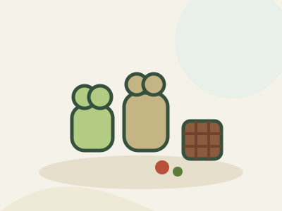

Яблочная, лимонная и молочная кислоты, введённые методом расплавной инфузии: кислинка раскрывается во вкусе, а не в процессе производства.
FusiMelt™ использует технологию расплавной инфузии, чтобы заключить подкислители в защитную матрицу. Чистая кислинка появляется в момент употребления, а не во время варки, формования или хранения.
Свободная кислота реагирует с сахаром и влагой, вызывая липкость, инверсию сахара и потерю аромата. FusiMelt™ удерживает кислоту внутри матрицы до употребления и может напрямую заменять стандартные яблочную, лимонную и молочную кислоты в существующих рецептурах.
Защита, высвобождение и результат — на уровне продукта и вкуса.
Предотвращает преждевременную реакцию кислоты с сахаром, гигроскопичность посыпанных поверхностей и потерю аромата.
Кислота высвобождается во рту, а не в процессе производства. Снижает инверсию сахара при хранении и защищает гелевые системы от воздействия кислоты.
Более яркая и чистая кислинка при первом укусе, стабильность при варке и формовании, постоянное качество в течение срока годности.
Три этапа — от введения кислоты до её раскрытия во вкусе.
Подкислитель вводится в расплавленную матрицу и затвердевает — свободная кислота на поверхности не контактирует с сахаром или влагой.
Варка, отсадка, формование и обсыпка не затрагивают кислоту; поверхности остаются сухими.
Тепло тела и слюна раскрывают матрицу — чистая, яркая кислинка появляется именно в нужный момент.
Одна технология расплавной инфузии — три разных характера кислинки.
Продолжительная, округлая кислинка. Снижение преждевременной реакции с сахаром, стабильность при отсадке и формовании.
Яркая, свежая фруктовая кислинка. Выраженный эффект при первом укусе; обсыпка остаётся сухой и сыпучей, без инверсии сахара.
Мягкая, ровная кислотность без резкости. Защищает текстуру мягких сладостей, чистое высвобождение при употреблении.
Возможно прямое введение в существующую рецептуру. Образцы, спецификации и испытания в рецептурах — по запросу.
Кислые кондитерские изделия, где важны вкус и стабильность поверхности.


Подкислители для кондитерских изделий, введённые методом расплавной инфузии: кислота заключена в защитную матрицу и раскрывается при употреблении.
Яблочная, лимонная и молочная — каждая с собственным вкусовым профилем.
Да, предусмотрено прямое введение в существующую рецептуру. Пригодность подтверждается испытанием в конкретном продукте.
Свободная кислота реагирует с сахаром и влагой. FusiMelt™ удерживает кислоту в матрице, поэтому поверхность остаётся сухой и сыпучей.
Пришлите состав продукта и требования к рецептуре — подберём технологию, пришлём образцы, спецификации и данные по применению.